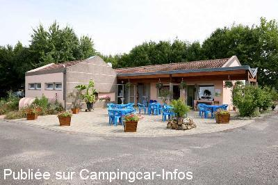
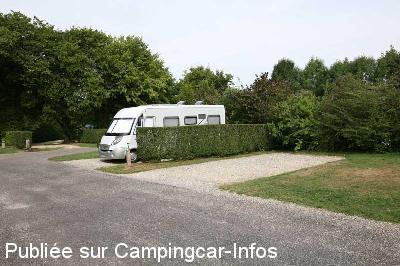

ACS = Aire de services sur camping acceptant le passage pour les services de :
SOULAINES DHUYS
(N° 746)
Accès/adresse :
9 Rue de la Croix Badeau
Camping Municipal la Croix Badeau ***
10200 SOULAINES DHUYS
Camping Municipal la Croix Badeau ***
10200 SOULAINES DHUYS
Latitude : (Nord) 48.37663° Décimaux ou 48° 22′ 35′′
Longitude : (Est) 4.73824° Décimaux ou 4° 44′ 17′′
Tarif : 2014
Stop accueil, sauf du 10/07 au 14/08 : 10,50 €
Forfait, emplacement C-C, personnes, électricité : 15,80 à 19 €
Personne + 7 ans : 3,10 à 3,80 €
Enfant 4 à 7 ans : 2,60 à 3 €
Électricité : 3,20 €
Animal : 1 €
Services C-C de passage : 4 €
Type de borne : Plateforme
Services :


Accès handicapés
Lave-linge
Jeux
Snack-bar
Autres informations :
Ouvert du 1/04 au 30/09
39 emplacements, séparés par des haies
Tel +33(0)325 270 543
http://www.croix-badeau.com
responsable@croix-badeau.com

Le 29/08/2009 par rd.dreux

Le 29/08/2009 par rd.dreux
de
chouky78
le 19/04/2014 :
Nous avons séjourné pour une nuit le 18/04/14, camping agréable et très calme. Les gérants du camping sont très sympathique et très accueillant.
Joli village à visiter, très belle église, belle petite chapelle.
Nous avons séjourné pour une nuit le 18/04/14, camping agréable et très calme. Les gérants du camping sont très sympathique et très accueillant.
Joli village à visiter, très belle église, belle petite chapelle.
de
Philippe BAWIN de Ramillies en belgique
le 13/05/2013 :
Nous arrivé ce dimanche 12 Mai 2013 ou nous avons été accueillis très bien par le patron du camping. Dans un premier temps ce n'était que pour une nuit. Mais nous sommes resté 2 jours.
La borne de type européenne est en cours de déplacement vers une zone complètement équipée et à l'extérieur.
Le camping 3 étoiles full confort est à recommander
Nous arrivé ce dimanche 12 Mai 2013 ou nous avons été accueillis très bien par le patron du camping. Dans un premier temps ce n'était que pour une nuit. Mais nous sommes resté 2 jours.
La borne de type européenne est en cours de déplacement vers une zone complètement équipée et à l'extérieur.
Le camping 3 étoiles full confort est à recommander
de
Les Cabaniers_72
le 29/08/2009 :
Nous avons passé un agréable week-end sur ce camping. Il est très calme et la gentillesse des gérants (ou propriétaires) étaient remarquables. Les sanitaires sont remarquables pour leur propreté. Le village est joli et souhaite concourir pour les "Plus beaux villages de France".
Nous avons passé un agréable week-end sur ce camping. Il est très calme et la gentillesse des gérants (ou propriétaires) étaient remarquables. Les sanitaires sont remarquables pour leur propreté. Le village est joli et souhaite concourir pour les "Plus beaux villages de France".
de
Eynatten Albert
le 31/08/2006 :
Nous avons été agréablement surpris en entrant dans ce camping. Très propre, très bien entretenu : haies taillées, pelouse tondue, sanitaires régulièrement nettoyés, eau bien chaude, etc. Et ce qui ne gâte rien, les propriétaires sont très sympathiques. Un petit bémol : peu de commerces aux alentours.
Nous avions prévu de passer une seule nuit, nous sommes restés plus longtemps.
Nous avons été agréablement surpris en entrant dans ce camping. Très propre, très bien entretenu : haies taillées, pelouse tondue, sanitaires régulièrement nettoyés, eau bien chaude, etc. Et ce qui ne gâte rien, les propriétaires sont très sympathiques. Un petit bémol : peu de commerces aux alentours.
Nous avions prévu de passer une seule nuit, nous sommes restés plus longtemps.
de
jean-luc93
le 26/08/2005 :
Prendre la route à droite de l'église et faire 200 mètres, puis à gauche.
Prendre la route à droite de l'église et faire 200 mètres, puis à gauche.